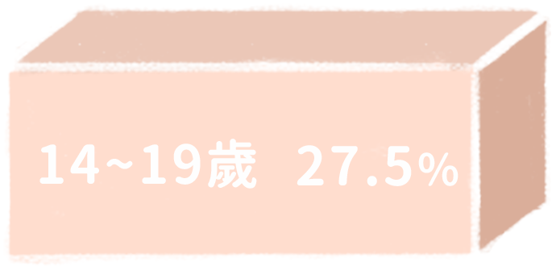
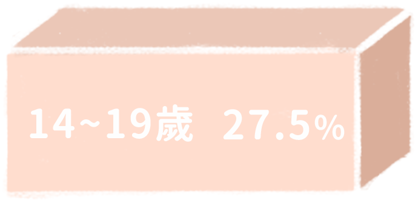
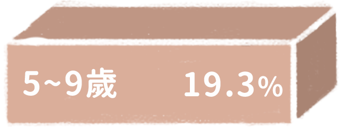
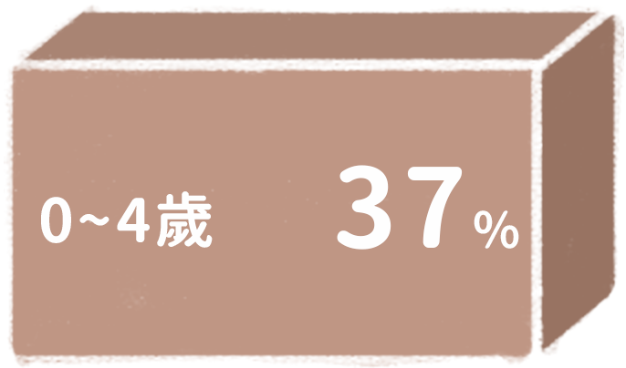
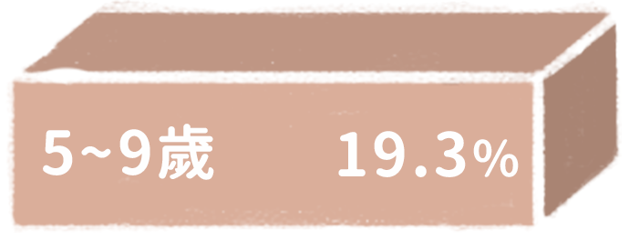
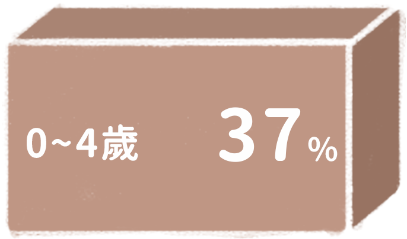
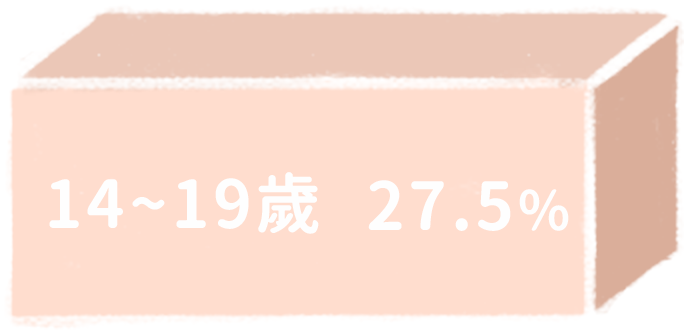
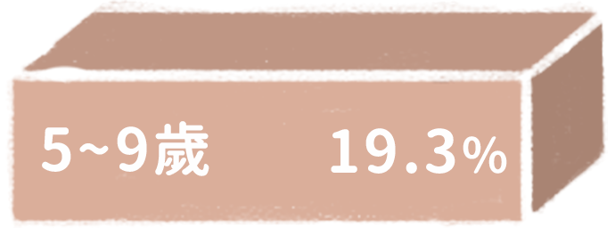
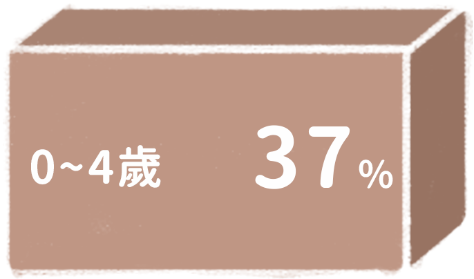

 




根據統計，19歲以下兒童急診人數約有103萬人，其中以0～4歲嬰幼兒比例最高。當嬰兒有突發狀況，第一時間的診治可能就是生死一瞬。
台灣正式邁入高齡社會，銀髮海嘯底下孩子身影稀落，生得少、卻死的多，一年我們失去1800多個孩子，其中20~29%其實是可預防的。擁有諾貝爾經濟學獎得主克魯曼(Paul Krugman)盛讚的「世界最佳健保體系」，我們為什麼保不住孩子？兒童醫療體系有多少破網？孩子急症重病為何被漏接？出生的孩子都留不住，催生口號更顯空洞
台灣1歲以下嬰兒死亡率在OECD國家排名第5高，偏高的嬰兒死亡率反映兒童醫療照顧和資源分配不均的問題。



根據統計，19歲以下兒童急診人數約有103萬人，其中以0～4歲嬰幼兒比例最高。當嬰兒有突發狀況，第一時間的診治可能就是生死一瞬。